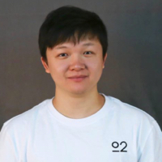
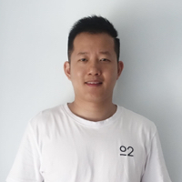

TOPIC
大咖开讲
小游戏的开发实现
两个小游戏的前端开发实现，包括「三消」和「连连看」，以及使用 Vue 框架实现的实例。
京东·未知素团队
小程序购物车性能优化
首屏时间提升27%，可操作时间提升50%！！！带你了解京东购物小程序购物页极限性能优化之路。
京东·WecTeam
基于Taro的京喜首页性能优化实践
通过对项目性能瓶颈的分析及改造，我们成功把初次访问京喜小程序的可交互时间减少40%，希望这一系列优化实践能对其他项目有所价值。
京东·凹凸实验室团队
设计大脑 - 羚珑智能作图和语音识别技术的结合
介绍我们在将语音技术、自然语言处理和羚珑的智能设计能力结合上做出的探索和尝试。
京东·凹凸实验室团队

Serverless 的前世今生
关于Serverless的讨论越来越多，看似与我们关系不大，实际上已经在很多场景下获得应用，那么，到底什么是Serverless，能否对我们的日常工作带来一些启示？
京东·凹凸实验室团队
揭秘可视化在线编辑器架构
羚珑ATOM智能页面设计是实现跨平台、跨终端、跨场景能力，并且具备代码化配置基础，一次搭建，一键上线，多端适配的平台，其中可视化在线编辑器是不可缺少的关键一环。
京东·凹凸实验室团队
ROUND-TABLE
圆桌讨论
技术提升与个人成长
在工作中，你是否为如何有效提升自己的技术而感到困惑？是否在日新月异的技术发展面前感到迷茫？是否为无法合理安排时间而感到苦恼？
我们请来了四位前端资深大佬，希望能为你拨云见日，指点迷津！
我们请来了四位前端资深大佬，希望能为你拨云见日，指点迷津！
- 李伟涛 | 京东·凹凸实验室团队
- 王 勇 | 京东·凹凸实验室团队
- 桂永红 | 京东·凹凸实验室团队
- 胡俊文 | 京东·未知素团队


ADDRESS
会议地址
REVIEW
往期回顾


ABOUT
关于极客沙龙
极客沙龙是由京东凹凸实验室主办的技术主题沙龙，每个季度举办。我们会邀请行业内的优秀团队与我们一起分享技术经验，畅谈工作心得。欢迎您的参与！